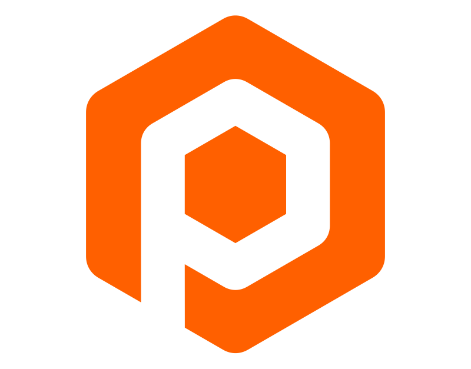

Luxusní byt a e-shop s nářadím nemůžou vypadat stejně — a nemají. Skupinu nedrží pohromadě jedna barva, ale jedno pravidlo: sdílená typografie, mřížka, fotostyl a jeden obrobený roh. Z toho pravidla pak každý obor čerpá vlastní tvář.
Nepotřebujete jednu barvu na všechno. Potřebujete jedno pravidlo, ze kterého vzniká každá barva.
K barvám luxusu vs. techniky
Energie patří technice, klid luxusu. Oranžová #FF6000 je skvělý signál pro průmysl — má hučet. Luxusní reality (art-deco bestpenthouse, golden-hour madhouse) ale nechtějí signál, chtějí materiál: tlumenou zlatou a mosaz na hluboké modři nebo černi.
Skupinu proto nedrží jedna paleta, ale jedna disciplína: stejná typografie, mřížka, obrobený roh a podpis. Barva je naopak nástroj, kterým každý obor mluví vlastním hlasem.
KH-Group není jeden obor, ale souostroví. Každý svět má vlastní klima — barvu, tón, materiál — a přesto všechny sdílí stejnou pevninu: typografii, obrobený roh a podpis. Tak drží pohromadě i obory tak vzdálené jako robotika a luxusní bydlení.
Šest světů, jedna pevnina. Tolik barevných klimat unese jen proto, že je drží pohromadě sdílená typografie, obrobený roh a podpis — ne jedna paleta.
Dva rejstříky pod jednou disciplínou. Industry / Tech čerpá živé signály z jednoho kruhu — zamčená lehkost i sytost, mění se jen odstín. Reality / Living stojí na sdíleném architektonickém neutrálu (kámen, beton, taupe) a akcent navrch čerpá z charakteru místa — dobových materiálů a světla konkrétní rezidence.
Teplá osa skupiny: KH-Group uprostřed zůstává bez barvy (černá / bílá / šedé), barvy nesou jen obory:
Tahle teplá osa + neutrály (grafit, ocel, architektonický kámen) unesou skoro všechno. Další barvy (hrášková strelnicny, teal…) jsou vzácné výjimky z obsahu, ne paleta omalóvánek — zákazník to musí pochopit i bez manuálu.
Energie, preciznost, stroj. Oranžová s černou zůstává (pasují skvěle) — přidáváme k nim ocelově šedou jako materiálový neutrál: kov, broušení, stroj.
Celá realitní větev stojí na sdíleném architektonickém neutrálu (kámen, taupe, beton, London grey — z mysak spec). Akcent navrch čerpá z charakteru místa — dobových materiálů a světla konkrétní rezidence, ne z ceny: zeleň zahrady, dub interiéru, art-deco mosaz, golden-hour čerň.
Bez hardwaru — workflow, AI, procesy. Studená modrá #5B8DEF (z loga flowsmith) odlišuje digitální svět od fyzické oranžové výroby. Na antracitu, čistě a technicky.
Magenta nevychází z materiálu, ale z poslání (stužka). Empatie, člověk před strojem. Na bílé čte text tmavší #B9087D, na tmavém #F796D6; tinty 5–9 % povoleny pro callouty — výjimka Care.
Plochá zlatá zůstane vždy jen žlutohnědá — a CSS gradient je zase jen „hezčí přechod“. Kov dělá až reálná textura: matná broušená mosaz s nízkým kontrastem a stoupajícím odleskem. Jeden token, používá se všude. Na tisku ražba / fólie, ne CMYK.
Holding bez vlastní barvy — nejvyšší možná neutralita: nad barevnými dětmi stojí černobílá autorita. Žlutá 100:28 (#FFB800, Pantone ~1235 C) slouží jako heritage akcent. Logo KH barvu nepředepisuje — žije dobře v mnoha barvách.
100:28 (#FFB800) dotýkající se oranžové: dost odlišná, aby nebyla „skoro oranžová", a přitom z téže teplé rodiny. Pokud holding zůstane achromatický, slouží jen jako vzácný heritage akcent. Pantone blízko 1235 C / 7549 C.
Definujeme v oklch kvůli logice systému — ale každá finální barva dostane i HEX / RGB a pro tisk, polep a dveře (mysak.studio!) také Pantone / CMYK. Přímé barvy nezahazujeme, jen je dnes řídíme z jednoho zdroje.
Každá značka má vlastní barvu a obor — ale tyhle společné pohyby z nich dělají jednu skupinu. Tady v kostce a naživo; níž rozpracované do detailu (písmo, kompozice, ochranné zóny, koordinace).
Jedno písmo skupiny (+ mono na „spec“). Hairline nadpisy × Bold logotyp — síla z napětí, ne z tloušťky.
Jeden zaoblený roh na kartách, rámech i logu. Tichý, ale oko ho pozná napříč skupinou.
Z PhotoRobot manuálu: jednoduchost a dostatek prostoru. Jeden žebřík mezer (viz níž).
Skutečné fotky, ne ilustrace. Stejná tonalita a ořezy — jiný objekt: byt, robot, plech.
Obrobený roh v praxi
Vždy jeden roh, vždy stejná logika. Nese akcent oboru (Industry, Luxury) — KH sám zůstává neutrální.
03·E Hlas skupiny potvrzeno: směr A
Pravidlo „kde a na co": logotyp a názvy značek tučně (jako KH GROUP výše), velké nadpisy hairline a mírně rozšířené. Mono popisky drží inženýrský charakter.
tučný wordmark × tenké nadpisyZvoleno (B): skupina i PhotoRobot mluví Titillium Web, řez max. Bold (700) — tím se přirozeně navazuje na vaše tištěné materiály. Sílu nese měřítko a plocha, ne tlustší inkoust.
03·F Písmo, jazyky & ikony
Skupina mluví Titillium Web, řez max. Bold 700 (v tenkém je hravé, black se slévá). Latinka s diakritikou; řečtinu, cyrilici a RTL doplní Noto. Mono drží „spec" popisky, Libre Caslon Text (OFL) editoriál. PhotoRobot tím přirozeně navazuje na své tištěné materiály. Pravidlo: v odstavci jeden řez, max. jeden důraz.
Standard skupiny: Phosphor (thin) — tenké řezy ladí s hairline, ~1 500 ikon. První tři výše (dokument, balík, účtenka) jsou přesně ty z cpq.photorobot.io — Phosphor je má také, přechod tedy beze ztráty.
03·G Kompozice · měřítko a kontrapunkt vah
Malou věc ukážeme obří (textura prášku, hrana plechu), velkou jen jako výřez — A380 poznáte podle dvou pater i z rohu, není ho třeba kreslit celý.
Hairline ve velkém + černý řez jako úder. Velké hairline navíc mírně rozšiřujeme a snižujeme (nižší poměr výška:šířka), ať nejsou samá vytáhlá svíčka. Logotyp ale zůstává tučný.
03·H Ochranné zóny & rytmus odstupů
Mezery vybíráme z jednoho žebříku — nikdy „skoro stejně". Malé kroky uvnitř bloku, velké mezi bloky. Z PhotoRobot manuálu: ochranná zóna = nedotknutelný vzduch kolem prvku, teď rozšířený na vše.
03·I Koordinace barev · princip „Tommy Hilfiger"
Jako u Tommy Hilfiger: paleta je navržená tak, aby k sobě ladila — všechny barvy vychází ze stejné DNA (zamčená sytost a jas). Proto kterékoli dvě značky vedle sebe (na kh-group.eu, na veletrhu, v co-brandingu) sednou. Sjednocuje je sdílený strukturní detail — obrobený roh a mono štítek — ne vnucená barevná linka.
Co jsme vyladili, černé na bílém — základ, ze kterého rozepíšeme CSS proměnné pro ostatní weby skupiny. Každé pravidlo má své „kde ano / kde ne".
Titillium Web je webové písmo skupiny (navazuje na tištěné materiály). Libre Caslon Text (OFL) pro editoriál, DM Mono pro „spec" popisky, Noto pro řečtinu/cyrilici a RTL. PhotoRobot si Titillium drží jako vlastní zakořeněné písmo.
Titillium je hravé v tenkých tazích; v black se v plné velikosti slévá. Strop je Bold 700. Sílu nese měřítko a plocha, ne tlustší inkoust.
Kde ANO: velké displejové nadpisy (hairline) a bold přepisy názvu jako text. Kde NE: logo / wordmark jako asset (deformace značky), drobný text a body. Sníží „vytáhlý" poměr velkých liter do klidnější proporce.
Velkorysejší rozpaly = lepší čitelnost a klid (Bovensiepen). Hairline nadpisy lehce kladné, mono „spec" labely výrazně rozpálené, body jemně. Logotyp wordmark naopak mírně záporné, aby držel pohromadě.
Síla z napětí, ne z tloušťky. Velký tenký nadpis vedle tučného logotypu/úderu. K tomu kontrast měřítka: malé věci velké, velké jako výřez.
Mezery z jednoho žebříku, nikdy „skoro stejně". Malé uvnitř bloku, velké mezi bloky. Kolem každého prvku nedotknutelná ochranná zóna (z PhotoRobot manuálu, rozšířená na vše).
Zlatá = reálná broušená textura (procedurální, stoupající odlesk), ne CSS gradient. Pro text přes background-clip:text, pro plochy jako výplň. Matná broušená mosaz — sedí k art-deco, nekřičí. Na tisku ražba / fólie.
V jednom odstavci jeden řez a nejvýš jeden druh důrazu. Žádná směs fontů, vah a kurzív naráz — to byla dřívější chyba. Klid a hierarchie přednost před efektem.
Každá karta má stejný skelet — obrobený roh, mono štítek oboru, endorsement podpis dole. Liší se jen odstín rodiny a tón. To je důkaz, že systém funguje napříč obory.
Apple, Tesla, Starlink — společný jmenovatel je klid: celoplošná kinematografická fotografie, minimum prvků, hairline × heavy a hodně vzduchu. Takhle vypadá kostra skupiny v plné aplikaci — stejný skelet, jiný obor = jiná paleta.
1 197 m² nad střechami města. Restaurovaný dobový nábytek, soukromá střešní zahrada, výhled na celou Prahu.

PhotoRobotROBOTSTurnkey product photography. Industrial grade. Engineered to spec, delivered globally, ready from day one.
Stejný postoj, jiný obor: kompozice, mřížka i podpis se nemění — mění se jen paleta (mosaz → oranžová + ocel) a fotografie.
Tell us the busywork that slows your team down. We forge a custom automation — built, run and maintained for you.
Třetí obor, stejná kostra: rytá „stuha" na <canvas> (jen transform/opacity, pod prefers-reduced-motion), heartbeat tečka, hodiny dvou poboček — softwarový puls místo fotky. Akcent logo blue #5B8DEF.
U realit nese akcent charakter konkrétního místa, ne cenu. Barevné sady pro celé portfolio — obor, materiál a akcent pohromadě.
Každý web = černá / bílá / šedé + jediný akcent. Nikdy víc. Tím padá riziko omalovánek.
Barva není dekorace — vychází z toho, co obor fyzicky dělá: ocel plechu, bílý prášek, dub interiéru, mosaz art-deca, oranžová robotů.
U bydlení akcent neřadí cenu — čerpá z charakteru rezidence: zeleň zahrady, dub interiéru, art-deco mosaz. Každé místo svrchované, žádná hierarchie.
Hrášková + bílá + antracit. Svěží zeleň z interiérů.
Dub + bílá + antracit (z fotek). Teplé dřevo udává tón.
Art-deco navy + metalická mosaz.
Golden-hour čerň + mosaz.
Tóny z architektury: RAL 7030 Stone Grey, FENIX Grigio Londra, Edel ZEAL Mink/Chihuahua, EC1 Barbican. Logo beze změny.
Pevně dle manuálu: oranžová #FF6000 + černá. Nic navíc — ocel sem nepatří.
Sestra → oranžová nesmí chybět. Sdílí oranžovou + černou, odliší se logem a ocelovým neutrálem.
Bílá vede (tiskne z bílého prášku), oranžová jen jiskra. Plná oranžová by byla proti smyslu.
Ocel materiálu + oranžový proužek + antracit.
Surový obrobený blok: antracit + oranžová obrobená hrana (jako jeho logo). Alt: blueprintová modř.
Workflow, AI a procesy — „smith" = kovář, jen materiál je digitální. Patří do Industry/Tech rejstříku (postoj, ne obor): antracit + ocel, akcent logo blue #5B8DEF (signál softwaru; oranžová zůstává fyzické výrobě).
Magenta rodina: #DE0A96 plochy/akcenty · #B9087D text na bílé · #F796D6 na tmavém · CMYK 0 96 5 0. Fialová #8367AC patří projektu Cinderella — nikdy nemíchat v jednom prvku. Care odchylky: text nikdy přes fotku (split layout), tinty 5–9 % povoleny pro callouty, „pink" vždy lowercase. Typografie už dle KH (track 0.025 · 300 · scaleY 0.94).
Černá + bílá + šedé. Žlutá 100:28 jako heritage akcent.
Jádro PhotoRobot rodiny je pevně dáno manuálem: oranžová #FF6000 + černá (PhotoRobot i sestra uni-robot — ocel sem nepatří). Výrobní jednotky (sls, sheetparts, prototype) vedou materiálem (bílý prášek, ocel, antracit) a oranžovou drží jako spojující akcent k rodině. K doladění z fotek: strizkov (dub); mysak má teď architektonické neutrály od vašich architektů (RAL 7030, FENIX Grigio Londra, Edel ZEAL, EC1 Barbican).
Každý projekt skupiny — od dostupného bydlení po medicínu — komunikuje s plným přesvědčením a stejnou řemeslnou úrovní. Liší se svět, ne kvalita: pro svého zákazníka je každý z nich první volba.
Sílu nedělá barva, ale přesvědčení: velkorysé měřítko, jeden jistý akcent, klidná kompozice. Každý segment mluví naplno ve svém rejstříku — luxus klidem, dostupné bydlení svěžestí, průmysl energií.
Schváleno. Obě loga nesou skupinový obrobený roh a oranžovou průmyslové rodiny (#FF6000 · Pantone 1655 C · C0 M75 Y100 K0). Ke stažení v balíčku logos/ — SVG vektory + PNG 1024 px, světlá i tmavá varianta.
Reagováno na vaši poznámku: symetrické pruhy s obarveným prostředním evokovaly rádio / ekvalizér. Tady jsou plechy odsazené do schodů (fyzický stoh, ne UI) a barví se horní — právě vyráběný díl „na vrchu hromady". Logika je čititelnější než barvit střed.
Surový blok s jednou zaoblenou hranou = polotovar v procesu obrábění. Přesně ten „obrobený roh", který zároveň povyšujeme na podpis celé skupiny — proto je nejsilnějším poutem k rodině.
Softwarový svět: wordmark Titillium 600, „smith" v logo blue #5B8DEF, „online" tenké. Tepající tečka (heartbeat) mezi slovy = živý puls automatizace; za textem rytá „stuha" na canvasu. Akcent oblouku navazuje na obrobený roh skupiny.
Tichý, neutrální podpis v patičce každého webu i v dokumentech. Monogram KH v obrobeném rohu — funguje na světlém i tmavém pozadí, nikdy nesoupeří s logem dané značky.
Aby loga na kh-group.eu přestala být „divoká směsice" — jasné tři police. Aktivní značky dostanou systém, servisní zůstávají tiché, dožívající odejdou s grácií.
Na photorobot.io, cases, academy, CPQ i PULSE už zárodky standardu běží: verze v patičce, šipky, mono štítky, KH podpis. Tady je kodifikujeme, aby je nesl každý web skupiny — i exchange, pulse, sheetparts a prototype, kterým design zatím chybí.
Každý web/aplikace: vlevo © rok + provozní entita, uprostřed verze a build v mono (důvěra inženýrů), vpravo cross-linky na sesterské weby. Už žije na .io, cases, pulse, CPQ — sjednocujeme formát.
→ = akce nebo posun v rámci téhož webu (OPEN CASE →, posun po stránce). ↗ = odchod jinam (PHOTOROBOT.COM ↗, manufacturer page). Uživatel pozná předem, kam klik vede. Už zavedeno na cases a CPQ.
Čitelnost nad fotografií či videem řeší scrim (tichý tmavý gradient přes podklad), ne komplikované text-shadow vrstvy (.io dnes). Písmo zůstává čisté, podklad se ztiší — stejná technika všude.
Interní a aplikační systémy (CPQ, PULSE) nesou KH monogram vpravo dole — už zavedeno v CPQ. Marketingové weby nesou „člen KH-Group" endorsement v patičce. Nikdy nesoupeří s logem značky.
Eyebrow, breadcrumbs, spec údaje, verze, NDA badge — vždy mono, uppercase, rozpálené. Drží inženýrský charakter napříč marketingem i aplikacemi (cases, academy, exchange, sheetparts už takhle mluví).
Publikovaný manuál nabízí kartu „Ke stažení": ZIP s tokens.css, texturami, logy a README — vždy ve verzi shodné s manuálem. Designéři a dodavatelé čerpají odsud, nikdy „od oka". Verze balíčku = verze v patičce.
Standard se zavádí podle rizika, ne plošně. A — plný standard: nové a vlastní weby (sheetparts, prototype, exchange, pulse). B — lehký dotyk: profesionálně spravované platformy (photorobot.com na Webflow, strizkov…) přebírají jen barvy/typo, a výhradně nástroji té platformy — žádné vkládané CSS. C — neměnit: stabilní produkční systémy se nedotýkají, dokud není plán a rollback. Pilot vždy na jedné stránce; co se osvědčí, jde dál.
Stejný formát jako typografie — závazná pravidla, ze kterých se generuje tokens.css. Každé má své „kde ano / kde ne".
Každý web stojí na achromatickém základu: skoro-černá ink, teplá bílá paper, grafit pro sekundární text. Barva je vždy menšina plochy — proto působí draze.
Každá značka má jediný akcent odvozený z materiálu oboru (viz 4.6): ocel plechu, bílý prášek, dub, mosaz, oranžová robotů. Druhý akcent na stránce neexistuje — tím padá riziko „omalovánek".
Oranžová je signál průmyslové větve — PhotoRobot (kotva, dle vlastního manuálu), uni-robot, a jako akcentní jiskra u sls / sheetparts / prototype. Na realitních webech a holdingu se nevyskytuje.
Dvě tlumené rodiny mezi černou a bílou: ocelová šeď pro průmysl (barva plechu a strojů), architektonický kámen pro reality (RAL 7030, Grigio Londra, ZEAL, Barbican). Nesou plochy a pozadí, ne akcenty.
Luxusní mosaz je vždy broušená textura, nikdy CSS gradient ani plochý tón. Text přes background-clip:text jen na tmavém či středním podkladu. V tisku ražba / fólie, nikdy CMYK náhrada.
Oranžová, žlutá ani mosaz nejsou barvy textu na světlém podkladu — tam slouží jen jako plochy, linky a detaily. Text na akcentní ploše je vždy tmavý (ink). Běžný text drží WCAG AA (≥ 4.5:1).
Řídicí zápis je oklch; z něj se odvozuje HEX/RGB pro web a Pantone/CMYK pro tisk, polepy a dveře (mysak!). Žádná barva bez kompletní trojice nejde do manuálu. Žlutá KH: #FFB800 · Pantone ~1235 C · Y100/M28 — heritage akcent; holding je achromatický.
Vzory ověřené na reálných webech (support.photorobot, flowsmith). Společné mechaniky — lokalizace, rezervace, konektory — řešíme jednou a sdílíme, ne vymýšlíme na každém webu znovu.
EN je default přímo v markupu; ostatní jazyky ve slovníku I18N.cs = {…}. Element nese data-i18n (text), data-i18n-ph (placeholder), data-i18n-html (bohatý obsah). Přepínač mění i endorsement („člen KH-Group" ↔ „a KH-Group company"). Stejný mechanismus na všech webech — pro RTL jen přidat dir="rtl" + Noto.
Žádný vlastní rezervační ani platební systém. Cal.com embed, jeden event type na úroveň (např. Emergency / Priority / Standard, 60 min), platba Stripe běží uvnitř Cal.com. Slevový voucher = €0 varianta. V návrhu je blok jen vizuální zástupka — produkce nahradí reálným embedem.
Stránka čte stav z URL a předvyplní se: ticket doplní pole, specialist zobrazí banner přiřazeného inženýra, tier předvybere urgenci. Umožní hloubkové prolinkování z e-mailů, CRM i jiných webů skupiny bez backendu navíc.
Poptávkové a kontaktní formuláře míří na jeden skupinový endpoint (forms.flowsmith.online/…) s ustálenými poli: company, name, email, phone, country, message. Do napojení backendu submit ukáže thank-you stav (žádná slepá chyba). Jeden sběr, jedno místo správy.
Loga a assety třetích stran (Splashtop, partneři) ukládat na vlastní doménu, ne načítat z cizí (lekce: logo z support.photorobot.io zmizelo, když se zdroj změnil). Odkazy na nástroje (Splashtop SOS EU, Cal.com) jsou explicitní a kontrolované; co je vidět, hostíme sami.
Drobné živé prvky dávají inženýrským webům puls: živé hodiny dvou poboček (Prague / New York), tepající tečka v logu, rytá „stuha" na <canvas>. Vždy jen transform/opacity a vždy pod prefers-reduced-motion. Decentní signál provozu, ne ozdoba.
{kind=link}
{kind=link}
{kind=link}
{kind=link}
{kind=link}
{kind=link}